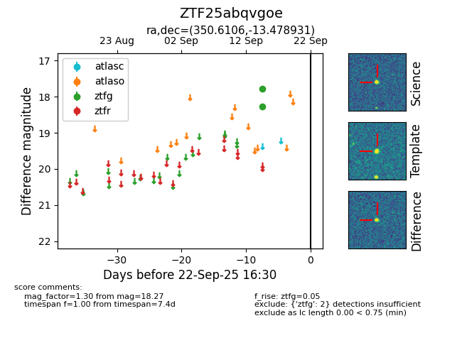

FINK: ZTF25abqvgoe
Lasair: ZTF25abqvgoe
ALeRCE: ZTF25abqvgoe
ZTF25abqvgoe (ztf,fink)
equatorial (ra, dec) = (350.6106,-13.47893)
galactic (l, b) = (61.7970,-65.13785)

last ztfg=18.27
2 ztfg detections